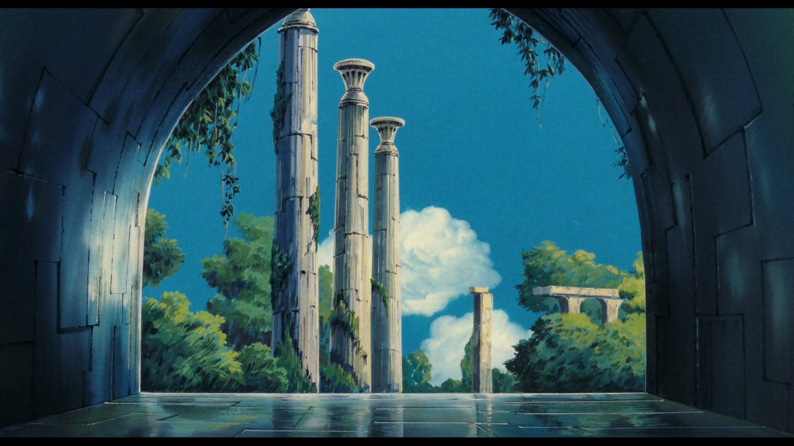
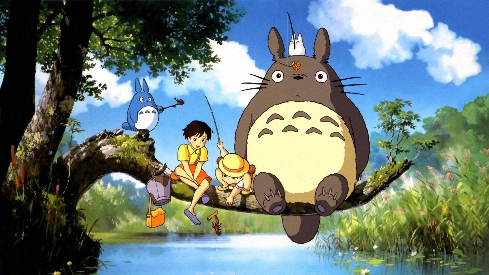
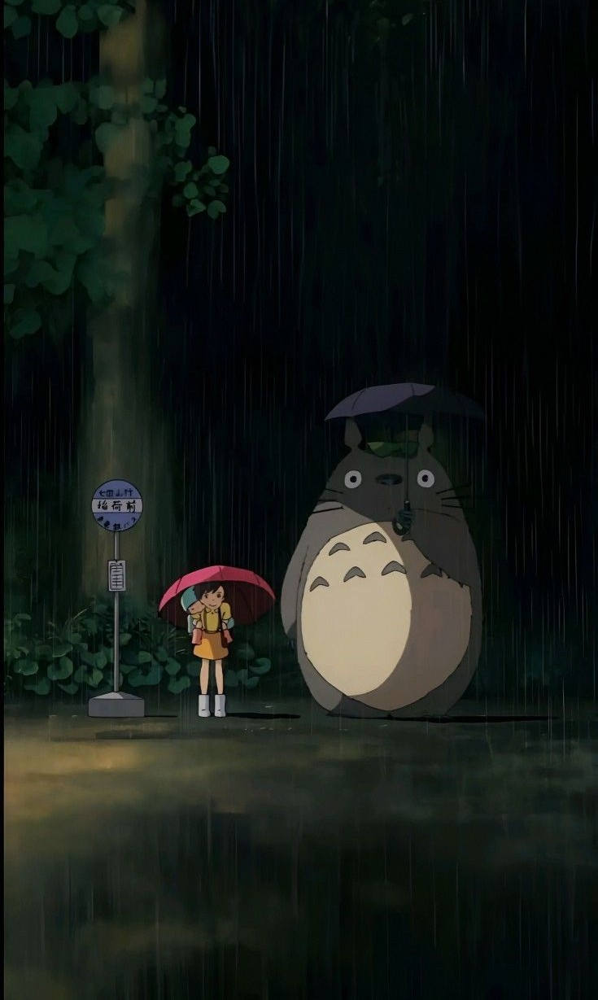
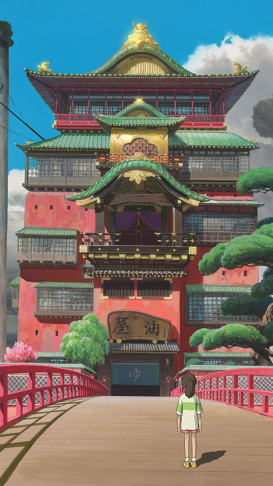

Películas que más han trascendido
Nausicaä del Valle del Viento

Inspirada en la novela gráfica homónima del propio Miyazaki, relata la historia de Nausicaä, princesa del Valle del Viento, que se ve enfrentada al ejército del reino de Tormekia quienes intentan hacerse con el control de un "Dios de la Guerra" como arma para erradicar el Bosque Contaminado y a los insectos gigantes que viven en él. Nausicaä intenta así por todos los medios impedir esa masacre.
El nombre Nausicaä está tomado de la princesa feacia en la Odisea de Homero, y la historia se inspiró en el cómic "Rowlf" de Richard Corben. Además, la película se inspiró en novelas de ciencia ficción como "Terramar" de Ursula K. Le Guin y "Dune" de Frank Herbert, así como en la tragedia de Minamata, el cuento "La dama que amaba a los insectos" y otros.


El castillo en el cielo
La película sigue las aventuras de Pazu y Sheeta, dos jóvenes que intentarán evitar que una antigua piedra mágica caiga en manos de un grupo de agentes militares, quienes intentarán usarla para llegar a una legendaria isla flotante llamada «Laputa»
Tecnicamete es considerada la primera película dirigida por Hayao Miyazaki tras su fundación de Studio Ghibli. Como datos curiosos encontramos que, originalmente, la idea para la película se basaba en la novela "Veinte mil leguas de viaje submarino" de Jules Verne, pero Miyazaki luego la cambió a "Los viajes de Gulliver" de Jonathan Swift haciendo referennnte a la isla homónime de este libro. Y, como dato extra, durante la persecución en dirigible, se incluye un mensaje en código Morse que se traduce como "¡Derríbenlos rápido!".
La tumba de las luciérnagas
Mi vecino Totoro
Película de animación japonesa de 1988, sigue la historia de las estudiantes y hermanas Satsuke y Mei mientras se establecen en su casa de campo con su padre y esperan a que su madre se recupere de una enfermedad en un hospital del área. Cuando las hermanas exploran su nueva casa, descubren y hacen amistad con unos duendes juguetones, y en el bosque cercano encuentran a una enorme criatura conocida como Totoro.
Curiosidades sobre Mi vecino Totoro
Hasta el día de hoy sostiene el récord de ser la peor ganancia en taquilla de todas las películas del Studio Ghibli, empezando su exito un año después tras estrenarse e televisión.
El nombre de Totoro surge de un balbuceo de Mei al intentar pronunciar la palabra «Tororu» que del japonés se traduciría a «Troll». La protagonista se confunde debido a su corta edad y pronuncia el famoso «Totoro».
Basada en hechos reales. Según la novela de Mi Vecino Totoro, el hospital al que llevan a su madre es Shichikokuyama, que se trata de un hospital especializado en tratar la tuberculosis en el mundo real; y aunque no se dice claramente en la película, todo apunta a que la enfermedad de la madre de las protagonistas era tuberculosis.
El viaje de Chihiro
El filme cuenta la historia de una niña de diez años llamada Chihiro, quien durante una mudanza se ve atrapada en un mundo mágico y sobrenatural, teniendo como misión buscar su libertad y la de sus padres, y así poder regresar a su mundo.
El viaje de Chihiro es considerada una de las mejores películas de animación de la historia. Su impecable estilo de animación, la complejidad de sus personajes y especialmente la trama, hacen de ésta una obra maestra.
Sabías que cuando inició la producción de la película, Miyazaki y su equipo seguían sin conocer el guion. El mismo director declaró que prefería ir desarrollando la historia mientras se dibujan los storyboards, de esta manera los personajes y sus diálogos serían más fluidos.
Otro dato curioso fue el desarrollo de la animació de Haku como dragón, pues el equipo de animación se inspiró en cuatro animales distintos: un perro, un gecko, una serpiente y una anguila. De igual manera se tomaron varios sitios reales como referentes para la ambietación de la película como lo son la casa de los baños de Yubaba basada en el Onsen de Dogo en la ciudad de Matsuyama y la pequeña localidad montañosa de Juifen en Taiwan. Sin embargo la casa de los baños de Yubaba guarda también un doble significado pues fue creada para reflejar la estructura social vertical de las empresas de Japón, caracterizada por pensar en el trabajador como miembro de la compañía en la que tiene vivir por y para ella.

El increíble castillo vagabundo


La película está ambientada en un reino ficticio en el cual tanto la magia como la tecnología del siglo XX están presentes. Sophie es una joven sombrerera que es víctima del hechizo de una bruja y que decide ir al castillo ambulante, lugar habitado por el mago Howl, para ver si puede encontrar una solución al maleficio.
La película está inspirada en la novela de Diana Wynn Jones, y el barrio de Petite Venice en Colmar, Alsacia, Francia, sirvió como inspiración para los paisajes.


Ponyo
Durante una excursión prohibida para ver el mundo de la superficie, una princesa pez de colores conoce a un niño llamado Sosuke, quien le pone el nombre de Ponyo. Ponyo quiere volverse humana, y mientras crece su amistad con Sosuke ella se va transformando; sin embargo el padre de Ponyo la regresa al reino del océano, pero el deseo de Ponyo es tan poderoso que ella se libera, y en el proceso, derrama una colección de elixires mágicos que ponen en peligro la aldea de Sosuke.
Uno de los datos curiosos que podemos encotrar en este film es el verdadero nombre de Ponyo "Brynhildr", el cual viene del nombre de la hija mayor de las nueve doncellas que sale en la opera de Wagner "Ride of the Valkyries". Dicha ópera esta basada en un cuento nórdico.
Otro dato es el indescriptible personaje "Grand Mahre" incluso para el mismo Miyazaki, se la describe en el documento de planificación como "Una madre de mar, un mar, una personalidad, una presencia enorme cuya apariencia no se puede determinar, Fujimoto es uno de sus muchos maridos","Unida a todas las vidas, el origen, esposo, esposo, hijos desconocidos, en medio del mundo de la vida y de la muerte".

El chico y la garza
Mahito, un chico de 12 años, lucha por asentarse en una nueva ciudad tras la muerte de su madre. Sin embargo, cuando una garza parlante informa a Mahito de que su madre sigue viva, entra en una torre abandonada, llegando a otro mundo, para ir en su búsqueda.
Si bien el film se lanzó a las pantallas bajo el nombre de ‘El Niño y la Garza’, la realidad es que su título original es ‘Kimi-tachi wa Dō Ikiru ka’ o ‘¿Cómo vives?’, palabras que tienen su inspiración en el libro homónimo de Yoshino Genzaburō de 1937. En él, se narra la historia de Honda Jun’ichi, un adolescente de 15 años que busca su lugar en el mundo a medida que crece personalmente y se desenvuelve en el ámbito escolar de la época.